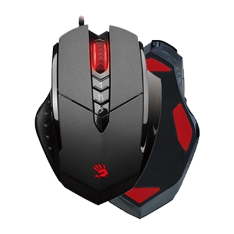

Моя переферия и акссесуары
В начале зимы 2020 года я начал обновлять свою переферию.
На этой странице можно ознакомиться с моей конфигурацией девайсов до "апгрейда" и после.
Конфигурация до "апгрейда"
- Клавиатура: Trust GXT 830-RW AVONN (membrane)
- Мышь: A4Tech Bloody V7M
- Наушники: Sony N/A
- Монитор: N/A 1440x900 15"
Клавиатура:
| Характеристика | Данные |
| Тип интерфейса | USB |
| Доп. клавиши | 12 медиа-кнопок |
| Длина провода | 1,4 м |
| Подсветка | Есть |
| Время отклика | 50 мс |
Мышь:

| Характеристика | Данные |
| Тип интерфейса | USB |
| Время отклика | 1 мс |
| Макс. разрешение | 3200 CPI |
| Кол-во доп. кнопок | 5 |
| ПО Настройки | Есть |
Конфигурация после "апгрейда"
- Клавиатура: SAVIO Tempest Outemu Blue
- Мышь: A4Tech Bloody V7M
- Монитор: Philips PHL 243V7
- Звук:
- Наушники: Sony N/A
- HDMI-звук: JBL Charge 2+
Клавиатура:
| Характеристика | Данные |
| Тип интерфейса | USB |
| Тип клавиш/Вид клавиш | Механические/Outemu Blue |
| Длина провода | 1,5 м |
| Num Pad | Нет |
Монитор:
| Характеристика | Данные |
| Матрица | IPS |
| Формат изображение | 16:9 |
| Разрешение | 1920 x 1080 |
| Частота обновления кадров | 60Гц |
| Размер | 23,8" |
| Доп. функции | LowBlue Mode |